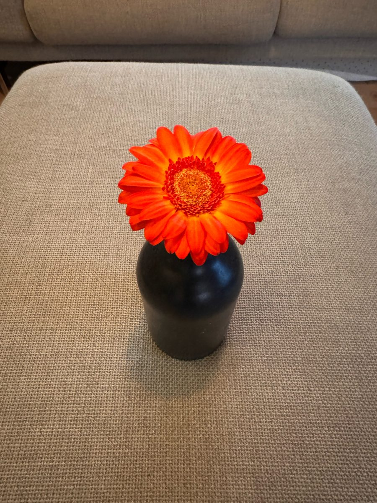

Persoonlijk
Wie ik ben en hoe ik leef
Dit zijn mijn eigen lessen en afspraken met mezelf.
Ik deel ze hier, zonder ze aan iemand op te dringen.

Bovenaan
- Ik doe goed. Ik ben goed.
- In "ik ben goed" zit kalmte en alles wat goed is aan mij: creatief, lief, zorgzaam, empathisch, en meer. Dat is voor iedereen anders.
- Ik doe lief
- Ik doe rustig
- Ik doe kalm
- Ik ben ik. Dat is alles, en dat is genoeg.
- Ik geef honderd procent en let op dat het ook te veel kan zijn.
- Mijn resultaten staan los van wie ik ben.
- Ik mag dingen proberen. Ik doe dingen, ik haal er resultaten uit, en soms gaat het mis.
- Krijg ik niet wat ik graag wilde hebben? Dan is het jammer. En dan mag ik daar verdriet over hebben.
- Dat geldt ook voor mijn omgeving: verliezen ze iets of krijgen ze niet wat ze willen, dan is het jammer en mogen zij daar verdriet over hebben.
- Ik blijf bij wat ik zelf kan veranderen en ik pak dat aan.
- Ik zoek naar oplossingen en ik houd mijn aandacht bij het positieve.
- Ik zie wat goed gaat en zeg dat hardop.
- Ik mag fouten maken. Soms maak ik er bewust een, om te oefenen dat dit mag.
Methode
Ik programmeer mijn onderbewuste door steeds boodschapjes in mijn omgeving te plaatsen, bijvoorbeeld op mokken:
- Jij bent goed.
- Jij kan alles, probeer maar.
- Jij bent lief.
Intentie
- Ik beantwoord een negatieve reactie met een positieve reactie of vraag. Krijg ik een minnetje, dan stuur ik een plusje terug. Dat lukt niet altijd, maar dat is de intentie.
- Herhalen programmeert mijn onderbewuste. Daarom herhaal ik alleen wat ik wil versterken.
- Ik formuleer zinnen en teksten zonder ontkenning. Ik zeg wat ik wél doe.
Verantwoordelijkheid
- Ik neem altijd verantwoordelijkheid voor mijn acties.
- Er is altijd iets wat ik kan doen. Bijna altijd.
- Er zijn altijd oplossingen. Heb ik de koning al gebeld, de gemeente, de provincie, de politie, mijn oma? Heb ik al een andere oplossing bedacht?
Eerste stap (belangrijk)
- Ik zet altijd de eerste stap.
- Ik ga stap voor stap, niet in één keer van nul naar de zon.
- Is mijn doel de zon, dan is mijn doel misschien iets te ver. Kom ik te dicht bij de zon, dan brand ik mezelf.
Afspraken
- Ik kom mijn afspraken na. Lukt dat een keer niet, dan overleg ik erover.
- Afspraken met mezelf zijn net zo goed afspraken als die met een ander. Kom ik ze na, dan leef ik volgens mijn eigen waarden.
Mijn waarden
Eerlijkheid, empathie en plezier.
- Eerlijk: naar iedereen in mijn omgeving en ook naar mezelf. Wat kan ik beter? Ik reflecteer.
- Empathie.
- Plezier: dat hoort er ook bij. Het gaat niet alleen om het hoogste en honderd procent geven.
- Het hoogst haalbare is wat ik bereik als ik alles geef wat ik heb, op een goede manier: kalm en opbouwend, voor mezelf en voor mijn omgeving.
Mijn omgeving
- Ik dring dit niet op aan mijn omgeving. Iedereen loopt zijn eigen pad, ik loop het mijne.
- Ik draag het positief uit: ik stel vragen in plaats van te vertellen hoe het moet, en ik zend positieve energie de wereld in. Daarmee breng ik veel goeds.
Mijn plan
- Ik maak een plan voor wat ik hiermee doe, met prioriteiten: wat vind ik belangrijk?
- Maak ik geen plan, dan word ik onderdeel van het plan van iemand anders. Met mijn eigen plan houd ik de regie.
- Ik ben verantwoordelijk voor mijn plan.
Plannen van anderen
- Ik mag iets vinden van de plannen van een ander of van wat een ander doet.
- Ik hoef daar niet altijd op te handelen.
- Handel ik erop, dan met vragen stellen of met positieve energie: een plusje sturen.
Mezelf niet vergeten
- Ik hoef de wereld niet alleen te redden. Ik zorg ook voor mezelf, want dan heeft de wereld ook iets aan mij.
- Ik zorg als eerste voor mezelf. Dat is niet egocentrisch: de enige op wie ik honderd procent kan bouwen ben ik.
- Dat geldt voor ieder mens: de enige op wie je honderd procent kunt en mag bouwen is jezelf. Anders ben je afhankelijk, en dan neem je in plaats van dat je geeft.
Rust bewaken
- Ik bewaak de rust voor mijn geest en mijn lijf, en ik blijf mezelf uitdagen.
- Nummer één voor rust in mijn geest: slaap.
- Daarnaast: yoga, nidra, wandelen, bezig zijn met mijn handen (tuin, opruimen). Fysiek bezig zijn geeft mijn geest rust.
- Ik verminder de prikkels om me heen voor mijn geest. Een opgeruimd huis is een opgeruimde geest.
- Ik houd een goede balans in de hoeveelheid werk die ik oppak.
- Ik deel graag wat ik over heb met anderen, maar alleen met wie het wil ontvangen.
Balans
- Ook leuk en vrolijk kan ik te veel doen. Ik houd het in balans.
- Ik ben eerlijk en vertel niet altijd alles. Ik zeg alleen wat waar is. Dat is niet oneerlijk.
Hulp vragen en hulp aannemen
- Veel negatieve uitingen zijn eigenlijk vragen. Ik zie ze als hulpvragen, ook bij kinderen die moe zijn, aandacht willen of zich afsluiten.
- Lukt iets niet, dan vraag ik hulp.
- Mensen geven graag hulp. Biedt iemand hulp aan, dan neem ik die aan: het is leuk voor de ander om te geven, en weiger ik, dan ontneem ik de ander dat.
- Vraag ik zelf op een negatieve manier om aandacht, dan vergeef ik mezelf. Dat is gewoon een resultaat. Ik vergeef niet alleen: de volgende keer doe ik het weer een stapje beter.
- Ook de ander die op een negatieve manier om aandacht vraagt, vergeef ik.
Niet naïef
- Ik ben niet naïef. Ik mag kritisch zijn naar anderen, zeker als zij meer nemen dan ze geven.
- Ik laat me niets afnemen.
- Ik laat ook anderen niets afnemen van andere mensen.